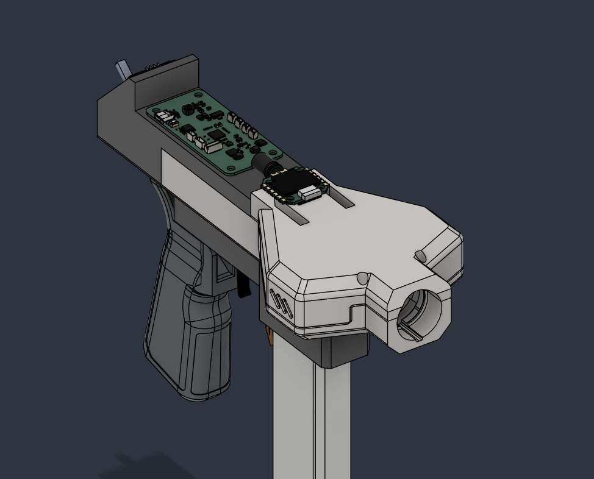
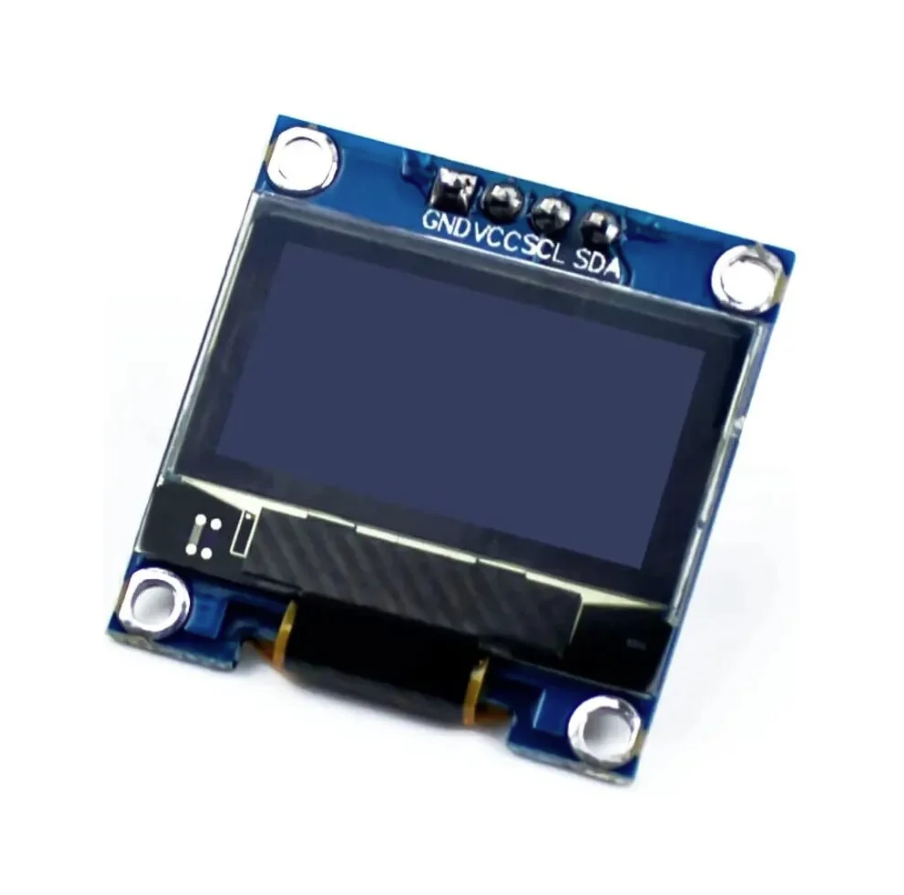
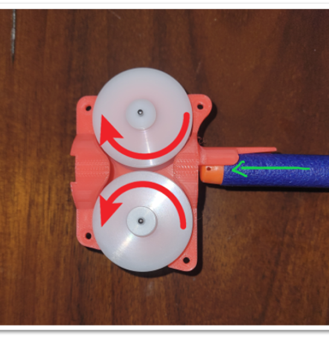
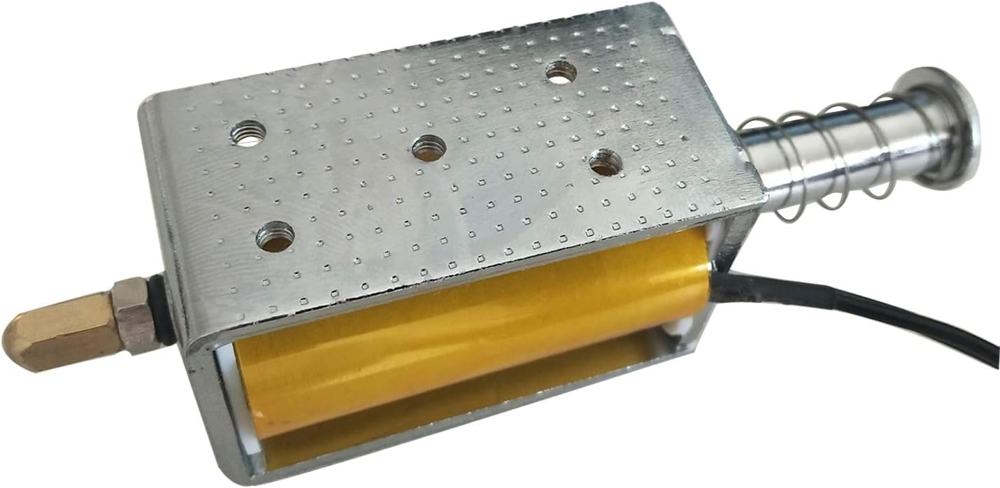
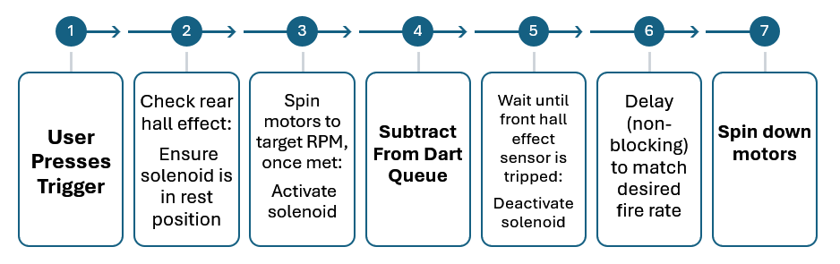
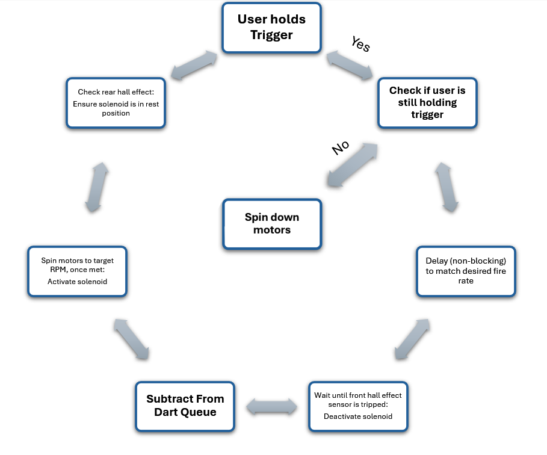
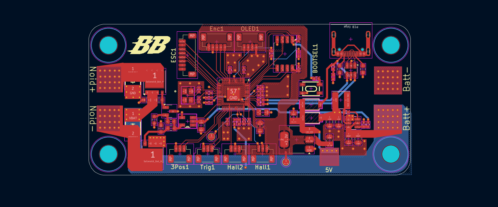
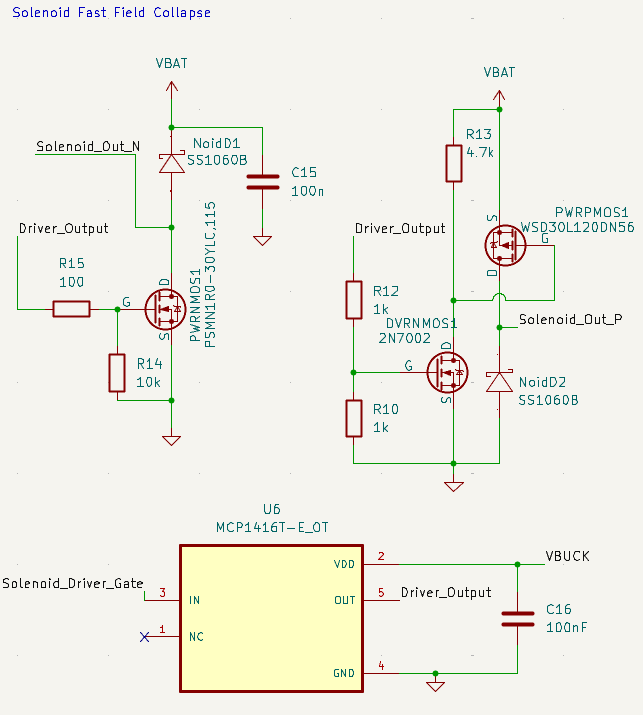
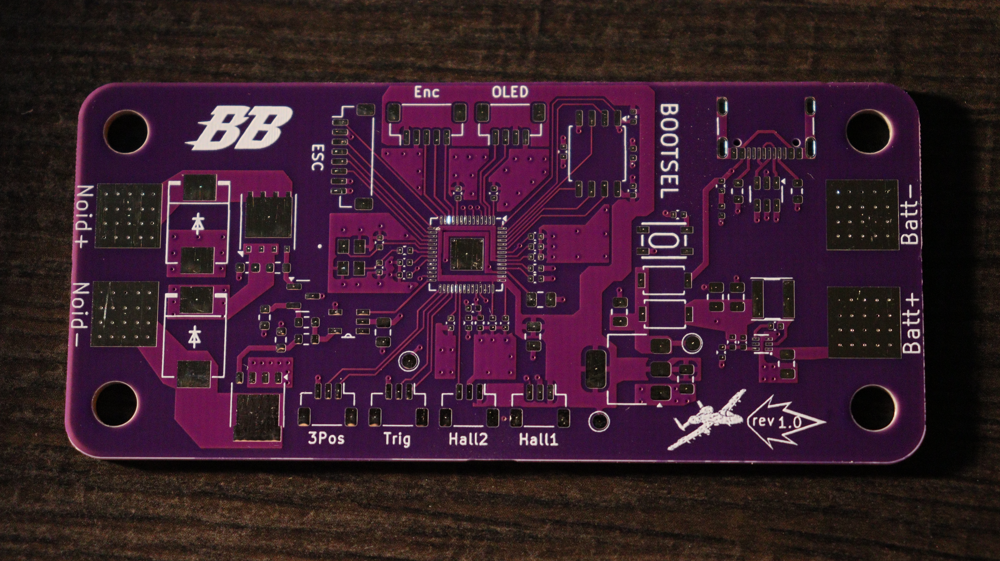

Design Goals
Our goal was to create a highly customizable brushless blaster platform, capable of high performance within all categories of foam flinging. With Warthog, the user is in complete control of the functionality of their blaster, capable of manually tweaking settings such as dart velocity, fire rate, fire mode, all within the confines of the blaster itself without the need for disassembly.

By utilizing a simple 128x64px OLED screen, we created a simple user interface for setting control. A rotary encoder offers dual functionality for menu traversal through its sweeping and button press function.

Technical Overview
The user interacts with the blaster much like any other. The trigger, when pressed, spins the motors to the desired RPM and fires a dart. The process by which this happens, however, was carefully designed for maximum efficiency within the confines of our design goals.
To start, it is important to briefly cover the propulsion method of our design. Within the Nerf hobby, Warthog would fall into the flywheel blaster category, in which two diametrically opposed flywheels spin to propel foam darts forward.

The motors we selected are of the brushless variety, demanding much higher hardware and software requirements then brushed motors, but offering an extreme amount of control in comparison. With these motors and the accompanying electronic speed controller (ESC), we can achieve a high performance within all dart velocity categories commonly found within the Nerf hobby (Typically ranging from 120 to 220 Feet Per Second (FPS)).
Along with the motors must be a device to push the darts into the flywheels, and in our case we selected a pusher solenoid. This kind of solenoid operates by activating a strong magnetic field within a coil which forces a pusher rod forward. A spring at the end of the device forces the pusher to retract once the magnetic field collapses.

We chose this device as its operation is simple, needing just power and ground to activate, while retracting on its own once it is no longer powered. The primary consideration with this device, however, is the rapid dissipation of the magnetic field needed to sustain higher fire rates, which is discussed later.
Syncing the motor spinup and solenoid actuation is critical and performed within a closed loop. We achieve this by monitoring the real time RPM of the motors and the active position of the solenoid. RPM readouts are gathered through the ESC telemetry, utilizing the onboard signals. Since the solenoid is purely electromechanical, however, an external monitoring system was needed. For this, we chose to use hall effect sensors on either side of the solenoid. By attaching small magnets to the tip and rear of the rod, we can accurately keep track of whether the solenoid is in its resting or actuated position.
In practice, a simplified sequence flow from when the user presses the trigger to when a dart is fired (in semi-auto) is as follows:

In full-auto, it changes to:

An important detail to mention is that our blaster follows a queue system for firing darts in semi-auto and burst modes, in which each trigger pull is accounted for: if you press the trigger 5 times, 5 increments of darts will be fire (1 for semi-auto or 2 to 5 in burst). For example, in semi-auto mode, pressing the trigger 5 times will add 5 darts to the queue, which will fire at the specified fire rate saved within the settings. If the blaster is set to 2 round burst, 10 darts will fire instead. This ensures smooth operation, unaffected by the internal operations of the blaster.
Technical Details
Warthog is designed around a 4-layer PCB, running on an RP2040 MCU with the necessary components for functionality. These include the external crystal (ABM8-272-T3, Same as the Raspberry Pi Pico), 2MB of QPSI flash storage (W25Q16JVSS), and the necessary decoupling capacitors. The PCB includes all essential functions of the blaster.

On the right side of the PCB are the input power pads for a 4S LiPo battery. As the battery voltage (fully charged) is 16.8V, a buck converter + LDO power circuit is included to safely power the rest of the board. The buck converter handles the bulk of the step down, bringing the voltage down to 5V. On the top right of the board exists the USB-C receptacle, which when plugged in provides 5V as well. Two Schottky diodes isolate these 5V sources. In this configuration, both the battery and USB-C can be plugged in for debugging purposes.
This 5V source is then fed into an LDO (NCP1117) to step down to 3.3V smoothly. This voltage is needed for the RP2040 and it's surrounding low-power circuitry. Peripheral wise, we utilize just USB for programming and I2C for the OLED screen. All other signals (such as from the trigger) are simply HIGH or LOW (with us preferring a internal pullup on the digital IO pins). Each of these signals comes externally from onboard JST-SH connectors, which includes the rotary enconder, OLED screen, both hall effect sensors, the three position switch, and the trigger. The large 8-pin JST connector is for the ESC, which receives commands from the RP2040 via the Dshot protocol, and sends telemetry (such as RPM) to the RP2040 for internal processing.
The final function of the board is to directly drive the solenoid pusher (fed by the output power pads on the left side of the board). As mentioned before, solenoids, as with all inductors, resist current changes. For our purposes, the main challenge is dissipating the magnetic field that builds in the coil when charged as quickly as possible, as this physically impedes the retraction of the pusher rod once deactivated.

We do this by utilizing a modified half H-bridge which equates to 3 mosfets, 2 diodes, and a few resistors. We take the 3.3V output of a GPIO pin on the RP2040 ("Solenoid_Driver_Gate") as the input to a gate driver (MCP1416T-E/OT). Said gate driver takes the 5V buck converter output as its VDD, which then outputs to our mosfets ("Driver_Output"). This allows us to drive the gate pin of each mosfet with 5V rather than 3.3V, which brings our mosfets closer to their saturation mode of operation. Otherwise (which was physically tested), we would experience major overheating in the mosfets rather quickly. In total, this setup translates to a rapid decay circuit in which the built-up current within the solenoid coil is rapidly discharged onto our battery rail as opposed to relying on just a flyback diode to passively dissipate current within its loop. The theory for this topology was borrowed from TorukMakto, with further detail and reading here.
Results
Current results exist within a test bench. Our fabricated PCBs were received 9/10/2026:

We are now waiting for our components to come in, where we will assemble and test. Assuming all goes well, the CAD will be finalized and a complete blaster shown. The plan with this blaster is to sell it as a DIY kit, including the board, hardware, and other supporting components.